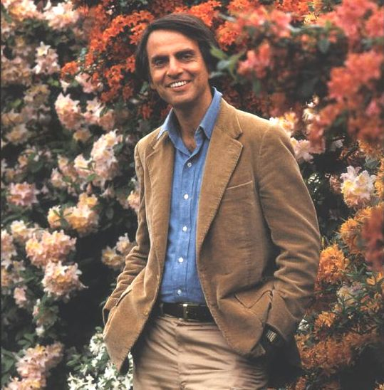
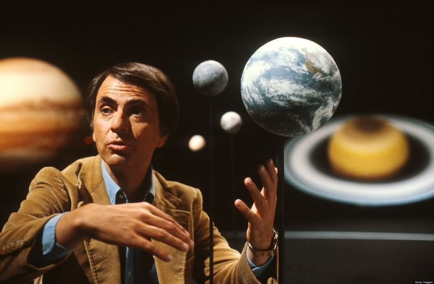
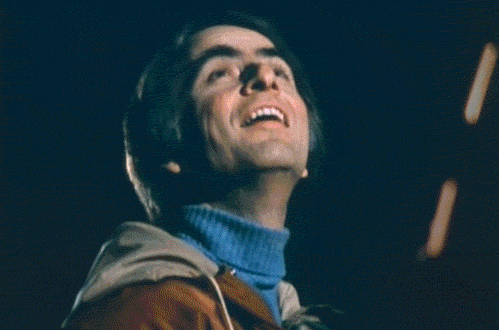
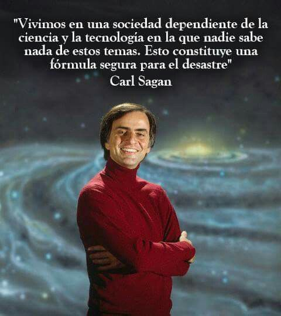

Carl Sagan fue un astrónomo, astrofísico y uno de los divulgadores científicos más influyentes del siglo XX. Se formó en la Universidad de Chicago, donde obtuvo títulos en física, astronomía y astrofísica, destacándose desde joven por su interés en el estudio de los planetas y la posibilidad de vida fuera de la Tierra. Durante su carrera, realizó importantes investigaciones sobre las atmósferas planetarias, especialmente las de Venus y Marte. Sus estudios ayudaron a comprender fenómenos como el efecto invernadero en Venus y las condiciones ambientales de otros planetas del sistema solar. También trabajó en el análisis de las posibilidades de vida extraterrestre, un tema que fue central en gran parte de su trayectoria científica. Sagan tuvo una participación activa en misiones espaciales de la NASA, colaborando en proyectos como las misiones Mariner, Viking, Voyager y Galileo. Contribuyó al diseño de mensajes enviados al espacio, como las placas de las sondas Pioneer y el famoso “Disco de Oro” de las Voyager, que contienen información sobre la humanidad y la Tierra destinada a posibles civilizaciones extraterrestres. Uno de sus mayores logros fue acercar la ciencia al público general. A través de libros, conferencias y especialmente la serie Cosmos, logró explicar conceptos complejos de manera clara, interesante y accesible. Esta serie se convirtió en una de las más vistas en la historia de la televisión educativa y marcó a generaciones enteras. Además, escribió numerosos libros de divulgación científica como El mundo y sus demonios y Contacto, donde combinó ciencia, reflexión y pensamiento crítico. En sus obras defendía la importancia de la razón, la evidencia y el escepticismo frente a creencias sin fundamento. A lo largo de su vida profesional recibió múltiples premios y reconocimientos por su trabajo científico y su capacidad para comunicar la ciencia. Su legado sigue siendo fundamental, ya que logró que millones de personas se interesaran por el universo y desarrollaran una mirada más crítica y curiosa sobre el mundo.





Los hobbies de Carl Sagan estaban muy ligados a su forma de ver el mundo: curiosa, creativa y siempre buscando entender el universo. Uno de sus principales pasatiempos era la lectura. Le gustaba leer sobre ciencia, filosofía y también literatura, lo que le ayudaba a conectar ideas y explicarlas de manera sencilla. También disfrutaba mucho de escribir, no solo textos científicos, sino libros pensados para todo el público, como Cosmos, donde combinaba su pasión por la ciencia con una forma muy accesible de contarla. Otro de sus hobbies era la observación del cielo. Desde joven se sentía fascinado por las estrellas y los planetas, y pasaba tiempo mirando el cielo nocturno, algo que después se convirtió en parte central de su carrera. Además, tenía interés por la comunicación y divulgación, disfrutando explicar temas complejos de forma clara, lo que se vio reflejado en la famosa serie Cosmos: A Personal Voyage. En general, más que hobbies separados, en su caso todo estaba bastante mezclado: lo que hacía por placer muchas veces también formaba parte de su trabajo, porque realmente le apasionaba entender y compartir el universo